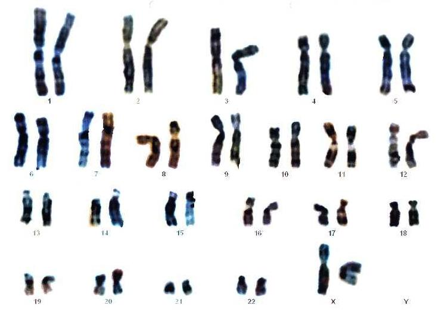

Festlegung des Geschlechts
Biologisch, körperlich, psychisch – Geschlecht entsteht auf mehreren Ebenen und ist vielschichtiger, als es auf den ersten Blick scheint.
Definition
Das chromosomale Geschlecht – auch genetisches Geschlecht genannt – wird im Moment der Befruchtung festgelegt. Es ergibt sich aus der Kombination der Gonosomen (Geschlechtschromosomen), die das 23. Chromosomenpaar des menschlichen Karyogramms bilden.
Es ist eines von drei Aspekten des biologischen Geschlechts, neben dem gonadalen und dem phänotypischen (genitalen) Geschlecht. Entscheidend ist dabei allein das Spermium: Die Eizelle trägt immer ein X-Chromosom, während das Spermium entweder ein X oder ein Y mitbringt.
Das X-Chromosom ist mit rund 2.000 Genen deutlich informationsreicher als das Y-Chromosom, das nur etwa 86 Gene trägt – darunter allerdings das entscheidende SRY-Gen.

Ein X-Chromosom von der Mutter, ein Y-Chromosom vom Vater. Das Y-Chromosom trägt das SRY-Gen, das die Hodenentwicklung auslöst und damit die männliche Geschlechtsentwicklung in Gang setzt.
Zwei X-Chromosomen, je eines von Mutter und Vater. Ohne SRY-Gen entwickeln sich die Gonaden automatisch zu Eierstöcken – die weibliche Entwicklung gilt als biologischer „Grundzustand".
Das SRY-Gen (Sex-determining Region of Y) liegt auf dem kurzen Arm des Y-Chromosoms, nahe der Spitze. Trotz seiner geringen Größe ist es das zentrale Gen für die männliche Geschlechtsentwicklung.
Ist das SRY-Gen aktiv, startet es eine genetische Signalkette, die die zunächst undifferenzierten Keimdrüsen des Embryos zu Hoden umwandelt. Ohne dieses Signal entwickeln sich die Keimdrüsen automatisch zu Eierstöcken. Das bedeutet: Nicht das Y-Chromosom als Ganzes, sondern vor allem das SRY-Gen steuert die männliche Entwicklung.
Chromosomenanomalien
Fehler bei der Meiose können dazu führen, dass ein Embryo eine abweichende Anzahl an Gonosomen erhält. Man unterscheidet Monosomie (ein Chromosom fehlt) und Trisomie (ein Chromosom mehr).
Nur ein X-Chromosom, kein zweites Gonosom. Betroffene entwickeln sich äußerlich weiblich, haben aber oft Wachstumsstörungen, keine funktionierende Eierstöcke und sind in der Regel infertil.
Ein zusätzliches X-Chromosom bei einem männlichen Individuum. Äußerlich meist männlich, aber häufig mit verminderter Testosteronproduktion, Infertilität und untypischen Körperproportionen.
Ein zusätzliches Y-Chromosom. Betroffene sind in der Regel männlich und oft symptomfrei. Manche zeigen leichte Entwicklungsverzögerungen oder überdurchschnittliche Körpergröße.
Drei X-Chromosomen bei einem weiblichen Individuum. Meist unauffällig, gelegentlich mit leichten Lernschwierigkeiten oder verzögerter Sprachentwicklung. Fertilität meist erhalten.
Körperliche Entwicklung
Das somatische Geschlecht umfasst das gonadale Geschlecht (Art der Keimdrüsen: Hoden oder Eierstöcke) sowie das genitale Geschlecht (innere und äußere Geschlechtsorgane). Es entsteht aus dem chromosomalen Geschlecht, wird aber durch Hormone gesteuert – und ist damit beeinflussbar.
Schlüsselhormone
Entwicklung Woche für Woche
Mit der Verschmelzung von Ei- und Samenzelle wird das Gonosomenpaar bestimmt – XX oder XY. Das chromosomale Geschlecht ist damit fixiert, die körperliche Entwicklung beginnt aber noch nicht.
Der Embryo besitzt zunächst sowohl Wolffsche Gänge (männliche Anlage) als auch Müller-Gänge (weibliche Anlage). Die Gonaden sind noch nicht differenziert – sie könnten sich in beide Richtungen entwickeln. Die äußeren Geschlechtsmerkmale sind bis zur 9. Woche ebenfalls nicht unterscheidbar.
Ist das SRY-Gen aktiv, wandeln sich die Gonaden zu Hoden um. Ohne SRY-Signal werden sie zu Eierstöcken (Ovarien). Die weibliche Entwicklung gilt dabei als Grundzustand – sie benötigt keine aktive hormonelle Steuerung.
Die embryonalen Hoden beginnen, Testosteron zu produzieren. Das Enzym 5α-Reduktase wandelt es in das wirksamere DHT um, das den Genitalhöcker zum Penis verlängert und die Harnröhre schließt. Gleichzeitig produzieren die Sertolizellen das Anti-Müller-Hormon (AMH), das die Müller-Gänge zurückbildet und so die weiblichen Geschlechtsanlagen verhindert.
Ohne Testosteron und AMH bleiben die Müller-Gänge erhalten und entwickeln sich zu Eileitern, Gebärmutter und dem oberen Teil der Vagina. Die Wolffsche Gänge bilden sich zurück. Der Genitalhöcker entwickelt sich zur Klitoris.
Bei männlichen Embryonen funktionieren die Hoden vollständig und produzieren kontinuierlich Testosteron. Bei weiblichen Embryonen beginnen die Eierstöcke mit der Östrogenproduktion. Die grundlegende Geschlechtsdifferenzierung ist abgeschlossen.
Von Intersexualität spricht man, wenn chromosomales, gonadales und phänotypisches Geschlecht nicht übereinstimmen. Dies kann durch verschiedene Ursachen entstehen – zum Beispiel durch Hormonrezeptor-Defekte.
Beim Androgeninsensitivitätssyndrom (AIS) reagieren die Körperzellen nicht auf Testosteron, obwohl ein XY-Chromosomensatz vorliegt. Der Körper entwickelt sich äußerlich weiblich. Solche Fälle zeigen, dass das chromosomale Geschlecht nicht allein bestimmend ist – die hormonelle Reaktion des Körpers spielt eine ebenso wichtige Rolle.
Identität & Entwicklung
Das psychische Geschlecht beschreibt die individuelle, innere Wahrnehmung des eigenen Geschlechts – unabhängig vom biologischen. Es entfaltet sich über die gesamte Kindheit und Jugend und wird sowohl von biologischen als auch von sozialen und kognitiven Faktoren beeinflusst.
Die Entwicklung beginnt schon vor der Geburt und setzt sich bis in die Adoleszenz fort. Sie umfasst immer beides: biologische Reifung (z.B. Hormone) und kognitive, affektive und soziale Prozesse.
Entwicklungsphasen
Ab der 5. Schwangerschaftswoche ist das biologische Geschlecht erkennbar. Pränatale Hormone beeinflussen nicht nur die körperliche Entwicklung, sondern legen auch erste neurobiologische Grundlagen für die spätere Geschlechtsidentität.
Bis Ende des zweiten Lebensjahres können Kinder bereits sicher zwischen männlichen und weiblichen Stimmen und Gesichtern unterscheiden. Rudimentäres Wissen über Geschlechtsstereotypen (z.B. typische Interessen) ist vorhanden, das Spielverhalten orientiert sich häufig schon am eigenen Geschlecht.
Die im zweiten Lebensjahr angelegten Geschlechtskonzepte vertiefen sich. Kinder entwickeln ein stabiles Bewusstsein für ihre eigene Geschlechtszugehörigkeit. Geschlechtstypisches Verhalten und Präferenzen werden klarer, soziale Einflüsse (Familie, Peers) gewinnen an Bedeutung.
Die genitale Grundlage der Geschlechter wird bewusster wahrgenommen. Kinder beginnen, Gemeinsamkeiten zwischen verschiedenen Geschlechtern und Unterschiede innerhalb eines Geschlechts zu erkennen. Die strikte Kategorisierung flexibilisiert sich etwas – in selbstbezogenen Kontexten bleibt die Geschlechtskategorie aber weiterhin zentral (Selbstkonzept).
Die Adoleszenz stellt die intensivste Phase der Geschlechtsidentitätsentwicklung dar. Körperliche Veränderungen werden zu bedeutsamen Entwicklungsaufgaben: den eigenen Körper kennenlernen und akzeptieren, die sexuelle Orientierung entwickeln, erste romantische Beziehungen eingehen und sich mit gesellschaftlichen Geschlechterrollen auseinandersetzen. Fragen nach der eigenen Identität stehen im Mittelpunkt.
Eine ausgeprägte, anhaltende Diskrepanz zwischen dem zugewiesenen Geschlecht und dem innerlich erlebten Geschlecht. Bei Kindern muss sie mindestens 3 Monate bestehen, bei Jugendlichen und Erwachsenen 6 Monate.
Jugendliche und Erwachsene äußern oft den Wunsch, Geschlechtsmerkmale loswerden zu wollen oder ihre Entwicklung zu verhindern. Sie erleben häufig klinisch bedeutsames Leid durch die Diskrepanz zwischen erlebtem und zugewiesenem Geschlecht.
Bezeichnet die Selbstbeschreibung mit Eigenschaften, die als typisch maskulin oder feminin eingeordnet werden. Gängige Messinstrumente: Personal Attributes Questionnaire und Bem Sex Role Inventory.
Man unterscheidet vier Typen: feminin, maskulin, androgyn (sowohl instrumentell als auch expressiv) und undifferenziert. In vielen sozialen Kontexten ist das Selbstkonzept wichtiger als das biologische Geschlecht – und zeigt eine hohe Vorhersagekraft für psychische und physische Gesundheit.
Prävalenz Geschlechtsdysphorie
Die Entstehung des psychischen Geschlechts ist nicht monokausal. Biologische Faktoren (Hormone, Genetik, pränatale Einflüsse) legen Grundlagen, die durch individuelle kognitive Entwicklung, familiäre Sozialisation und gesellschaftliche Normen überformt werden. Das Geschlechtsrollen-Selbstkonzept ist dabei kein starres Konstrukt, sondern entwickelt sich über das gesamte Leben weiter.